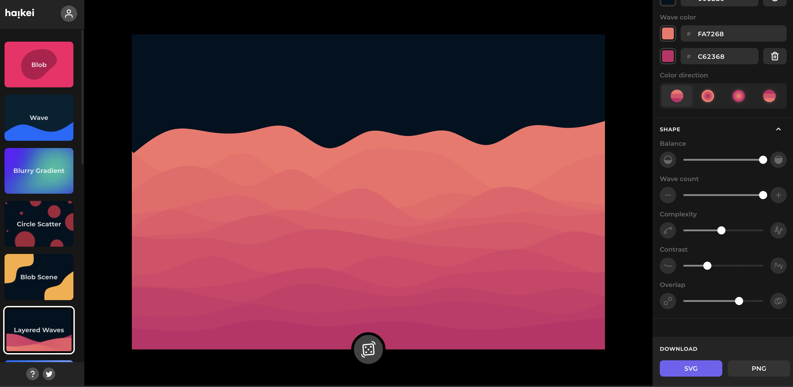
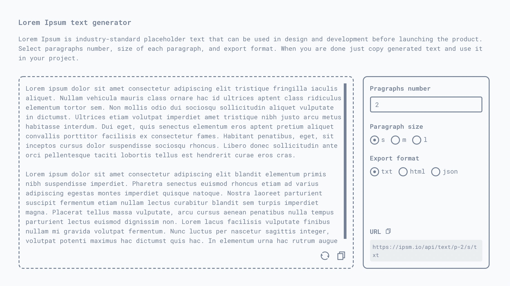
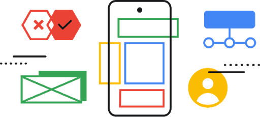
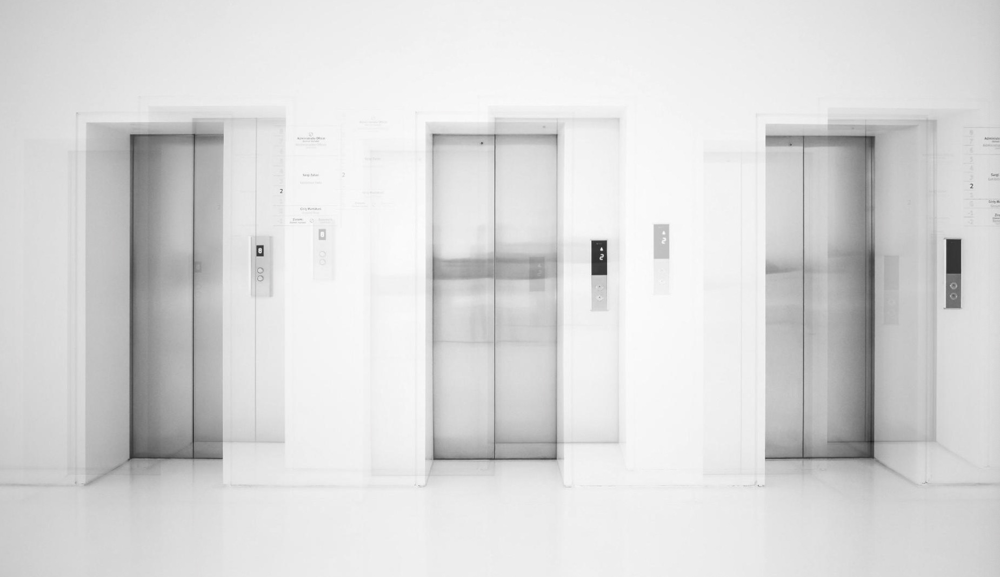
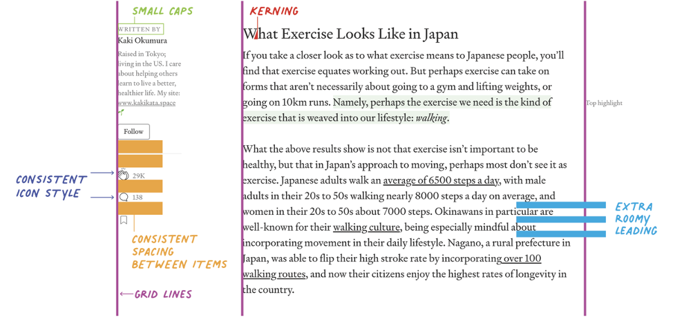
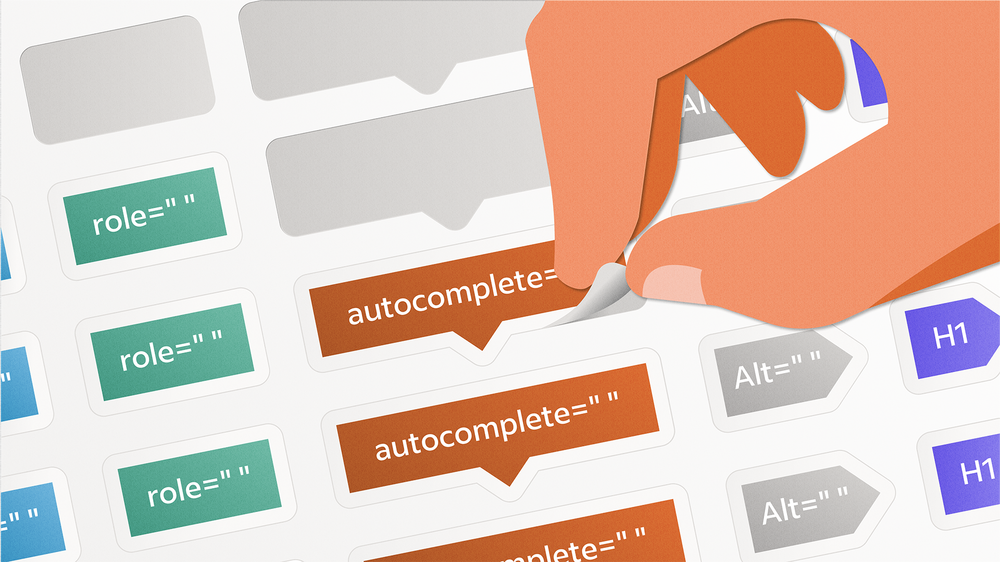
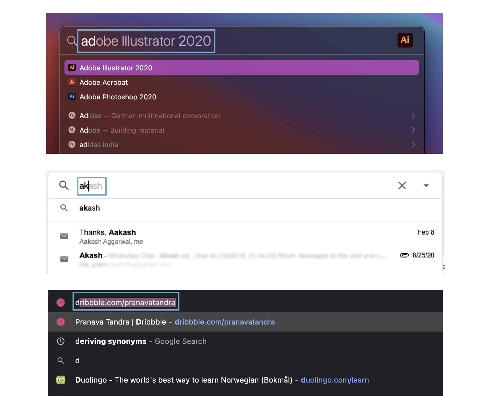
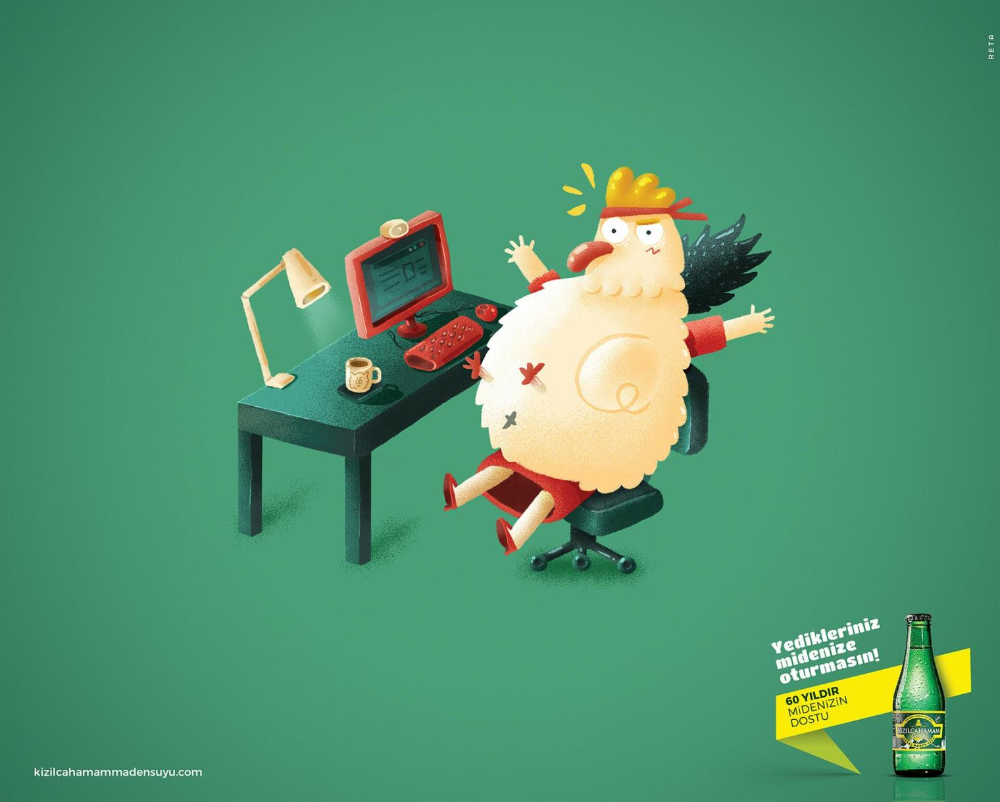
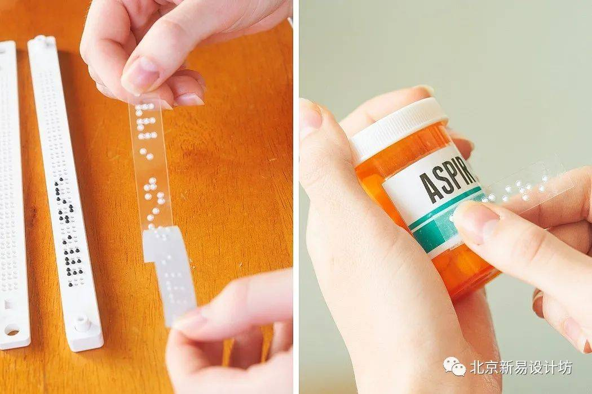
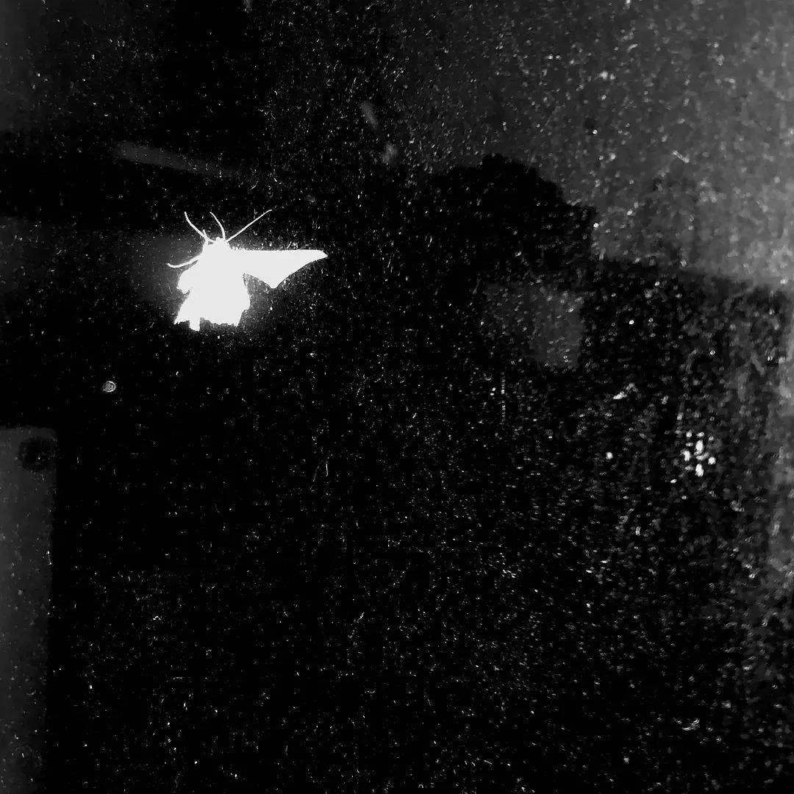

设计周刊 Design Weekly #50
📕 设计资源
Haikei- SVG 生成器
Haikei是一个web 应用，可以生成独特的SVG形状、背景和图案，随时应用到你的设计工具和工作流程中。

ipsm.io
一款面向设计师和开发人员的生产力工具集合，包含文字生成器、虚拟图像生成器、视频占位符生成器，设计师和开发人员可以直接从页面中选择自己想要的内容。视觉风格还挺不一样的。

Google UX Design Certificate
https://grow.google/uxdesign/#?modal_active=none
谷歌用户体验设计证书，谷歌在 Coursea 上为对 UX 感兴趣的同学推出的一门基础课程，同学们学起来呀~

📗 设计文章
Advice for Aspiring Designers
https://jonyablonski.com/articles/2021/advice-for-aspiring-designers/
高级产品设计师 Jon Yablonski 通过自己在职业生涯中的经验，总结的职业建议。 对设计的职业生涯有疑问的同学们，可以学习一下，文中从回答以下四个问题，对想进入设计行业的同学们有很好的指导：
- 我应该选择设计这条路么？
- 如何开始学习设计的？
- 入门的最佳方法是什么？
- 如何才能成为设计师？

Why Does a Design Look Good?
https://www.nngroup.com/articles/why-does-design-look-good
尼尔森集团出品：查看设计很容易，但知道设计为什么看起来不错是需要一些知识的，比如说一致性、层次结构和颜色、排版和间距等。
文中通过三种用户界面为例，分析了优秀设计具有吸引力的视觉设计原理。

Building an Accessibility Library
https://medium.com/indeed-design/building-an-accessibility-library-e134e9012c17
来自 Indeed 团队的分享，给 UX 设计人员建立一个无障碍可访问的库，打造人人都能使用的产品。正文包含详细的Figma 文件。

📘 设计案例
针对搜索栏和模糊匹配的设计实践
https://blog.prototypr.io/best-practices-designing-autosuggest-experiences-9c3394774519
作者通过对多款搜索栏的研究和分析，总结了8 条关于搜索栏和自动匹配的设计建议。

看到这支广告，连我都开始打……嗝——
https://www.topys.cn/article/31516
这系列名为“别打扰你的胃”（Lie heavy on the stomach）的广告，旨在推广旗下气泡水的保健功能，让消化不良的人们在喝了充满二氧化碳小气泡的水之后，能够畅快地打个嗝，将身体里积郁已久的气体排出。
广告灵感来源于土耳其的一句谚语——“别在你的胃上放重物”，虽然看书自然不能“望文生义”，但做创意这样玩儿，还挺有趣。将圆鼓鼓、胖乎乎的猪、鸡和羊，压在人的身上，夸张的演绎，让观众隔着屏幕都能感觉到沉重的压力。

📙 设计灵感
设计让这个世界充满爱——优秀的无障碍设计
https://www.shejipi.com/543488.html
作为一个行业，设计正在慢慢地更加重视可访问性。无论是微软(Microsoft)为不同能力的用户推出了一款重新设计的XBox控制器，还是苹果(Apple)在手表上安装了心电图仪，让它成为一款人人都能佩戴的可穿戴设备，无论年龄大小、行走距离、包容性、还是面向所有人的设计，都值得追求和欣赏。文中介绍了多款专为听人准备的设计，一起来看看优秀的无障碍设计是什么样子吧~

豆瓣的无用美学小组，藏着真正的艺术家
https://www.shejipi.com/551100.html
小组成员始终贯彻“你无用的样子真好看”的美学信条，致力于发现生活中的无用之美。
到无用美学小组逛了一圈之后，我发现里头藏着真正的艺术家，因为他们可以把苦闷的生活过成诗。
记录生活的样子~
